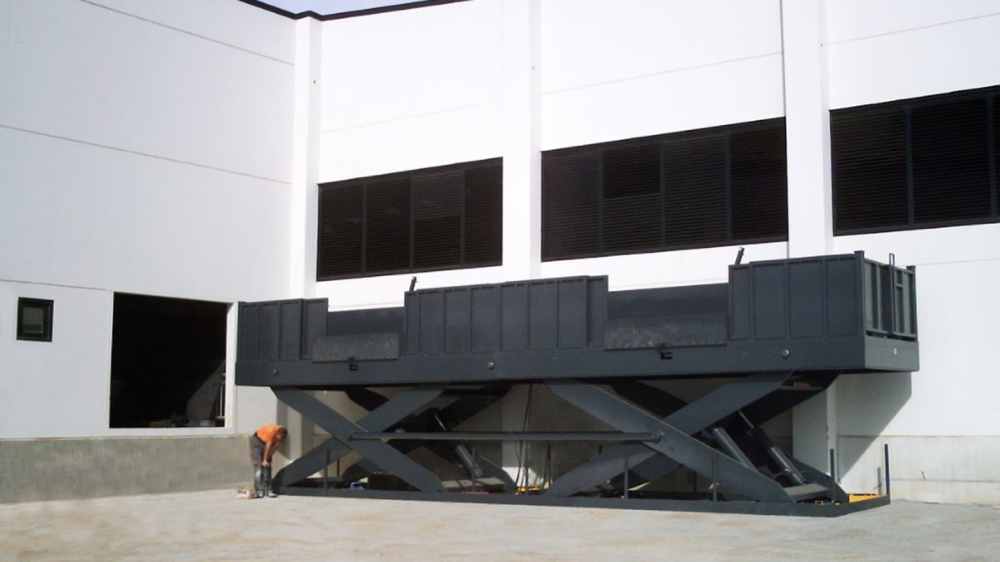
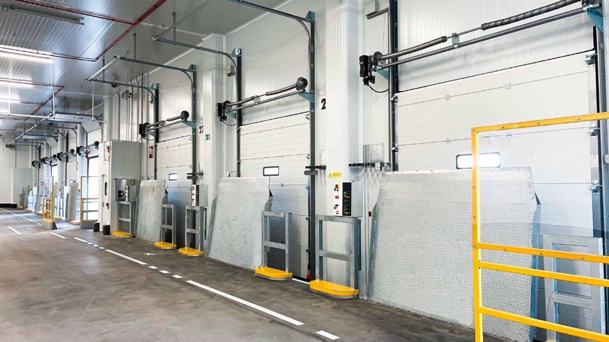
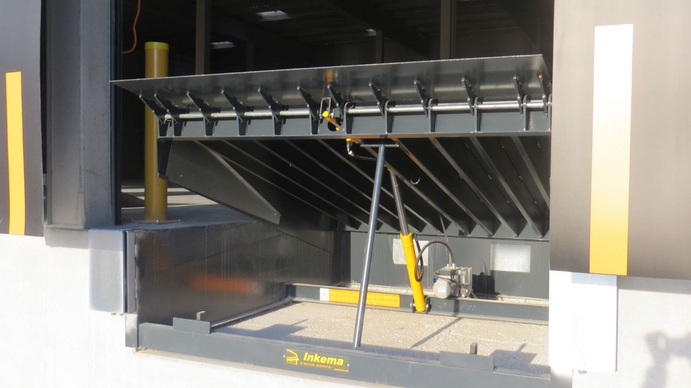
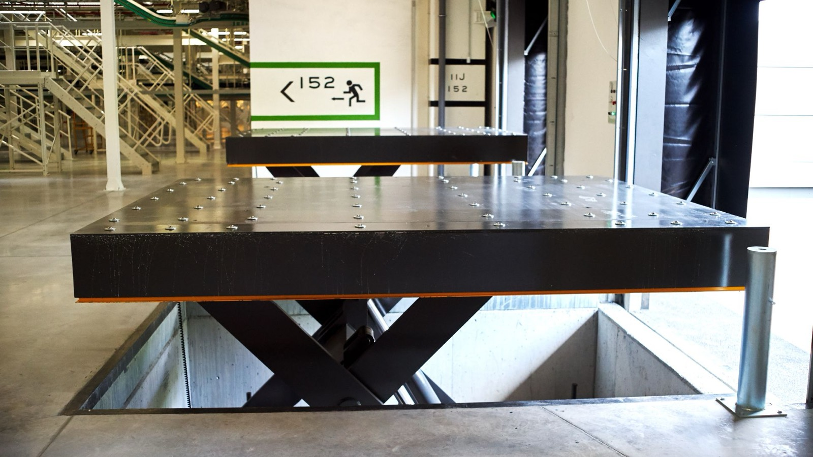

Spis treści (8)
- Od czego zacząć dobór stanowiska przeładunkowego
- Rampa przeładunkowa: standard dla obiektów z dokiem
- Podnośnik nożycowy: gdy nie ma miejsca na klasyczny dok
- Rampa mobilna: elastyczność w dowolnym miejscu
- Mostek przeładunkowy: prosto i bez zasilania
- Porównanie w skrócie
- Stanowisko to więcej niż jedno urządzenie
- Najczęstsze pytania
Wybór stanowiska przeładunkowego to decyzja na lata. Od niej zależy tempo pracy magazynu, bezpieczeństwo ludzi i towaru, a często także to, ile prac budowlanych trzeba wykonać przy inwestycji. W tym poradniku porównujemy cztery rozwiązania, które projektujemy i produkujemy: rampy hydrauliczne, podnośniki nożycowe, rampy mobilne i mostki przeładunkowe. Podpowiadamy, od jakich pytań zacząć i kiedy które urządzenie ma największy sens.
Od czego zacząć dobór stanowiska przeładunkowego
Zanim porównamy urządzenia, warto odpowiedzieć na kilka pytań o obiekt i sposób pracy. To one, a nie katalog, decydują o wyborze.
- Czy budynek ma dok na wysokości skrzyni ładunkowej? Jeśli posadzka magazynu jest podniesiona, naturalnym wyborem jest rampa. Jeśli obiekt stoi na poziomie gruntu, trzeba szukać innej drogi.
- Jakie pojazdy obsługujecie? Inne wymagania mają duże naczepy, a inne dostawcze auta o niskiej podłodze. Zróżnicowana flota oznacza dużą różnicę wysokości do pokonania.
- Jaki tonaż i jakie ładunki? Palety z wózkiem widłowym, ładunki drobnicowe, towary wrażliwe na temperaturę.
- Jak intensywnie pracuje stanowisko? Kilka dostaw w tygodniu to zupełnie inny scenariusz niż praca zmianowa.
- Czy przebudowa budynku wchodzi w grę? Przy modernizacji istniejącego obiektu często chodzi o rozwiązanie, które nie wymaga rozbiórek.
- Czy potrzebna jest izolacja termiczna? Chłodnie, magazyny farmaceutyczne i spożywcze wymagają szczelnego połączenia budynku z pojazdem.
Z tymi odpowiedziami łatwiej przejść do konkretów.

Rampa przeładunkowa: standard dla obiektów z dokiem
Rampa przeładunkowa tworzy stabilny i bezpieczny łącznik między budynkiem a samochodem ciężarowym. Niweluje różnicę wysokości, dzięki czemu załadunek i rozładunek odbywa się jednym ruchem poziomym. To rozwiązanie dla magazynów i centrów logistycznych, w których pojazdy podjeżdżają tyłem do doku.
Oferujemy rampy hydrauliczne wysuwane i teleskopowe, dostosowane do różnych obciążeń i o zróżnicowanym kącie nachylenia. Podstawowe są trzy typy:
- RH1 z krawędzią wychylną o długości 400 mm, dostępną także w wersji 500 i 600 mm,
- RH2 z krawędzią wysuwaną o długości 500 mm,
- RH3 z krawędzią wysuwaną o długości 1000 mm.
Długość krawędzi ma znaczenie przy doborze. Krawędź wysuwana pozwala precyzyjnie oprzeć rampę na skrzyni pojazdu, a dłuższa krawędź daje większy zapas przy pojazdach, które nie podjeżdżają idealnie do doku. NIEZWERYFIKOWANE: rekomendacja, który typ RH do jakiej floty i intensywności pracy, do potwierdzenia z doradcą technicznym Inkema
Rampę obsługuje się jednym przyciskiem. Nasze rampy produkujemy na zautomatyzowanej linii z udziałem robotów, bez materiałowego „odchudzania” konstrukcji. Dla użytkownika oznacza to powtarzalną jakość i wiele lat pracy, także przy intensywnej eksploatacji.
Kiedy rampa ma największy sens: obiekt ma dok na wysokości skrzyni, ruch jest regularny lub intensywny, a obsługiwane pojazdy to głównie ciężarówki i naczepy. Rampy dopasowujemy także do istniejących budynków, bez konieczności rozbiórek czy przebudów.
Podnośnik nożycowy: gdy nie ma miejsca na klasyczny dok
Podnośniki nożycowe stosuje się tam, gdzie nie ma rampy przeładunkowej albo nie da się zbudować standardowego stanowiska. Usprawniają pracę i poprawiają bezpieczeństwo załadunku oraz rozładunku. Specjalizujemy się w ich produkcji, a każdy egzemplarz projektujemy i wykonujemy na konkretne zamówienie, według opisanych potrzeb klienta.
Najczęściej klienci wybierają spośród trzech rodzajów:
- pojedyncze nożyce,
- podwójne nożyce, zaprojektowane dla większego zakresu podnoszenia i większej nośności,
- Dual SR, czyli dwa urządzenia w jednym, na przykład podnośnik z krawędzią wychylną lub teleskopową.
Produkujemy także urządzenia niestandardowe, dopasowane do rozmiaru i masy towaru albo specyfiki zadania. Podnośniki mają szereg blokad i czujników, które chronią użytkowników w trakcie pracy i podczas konserwacji. Na zamówienie doposażamy je w bariery ochronne. Mogą też pracować jako element zautomatyzowanego systemu logistycznego.
Kiedy podnośnik ma największy sens: obiekt stoi na poziomie gruntu, obsługujecie pojazdy o bardzo różnej wysokości podłogi albo potrzebujecie stanowiska w miejscu, gdzie budowa doku jest niemożliwa lub nieopłacalna. Nasze podnośniki pracują w sektorze spożywczym, farmaceutycznym, samochodowym, przemysłowym i tekstylnym.

Rampa mobilna: elastyczność w dowolnym miejscu
Rampa mobilna pozwala prowadzić załadunek i rozładunek w dowolnym miejscu, bezpośrednio z poziomu gruntu, bez potrzeby budowy doku. Rampy mobilne Inkema mogą mieć do 12 m długości, a ich dopuszczalne obciążenie w standardzie wynosi nawet 10 t.
Rampę wyposażamy w podnośnik hydrauliczny, który można obsługiwać na trzy sposoby:
- ręcznie,
- silnikiem zasilanym z akumulatora,
- silnikiem zasilanym bezpośrednio z sieci.
Kiedy rampa mobilna ma największy sens: przeładunki odbywają się w różnych miejscach placu, potrzebujecie dodatkowego stanowiska w szczycie sezonu albo obiekt jest tymczasowy. To także dobre rozwiązanie na czas rozbudowy magazynu.
Mostek przeładunkowy: prosto i bez zasilania
Mostek przeładunkowy obsługuje się ręcznie i nie wymaga zasilania, więc jest tani w eksploatacji. Nie ma też wymagań montażowych. Sprawdza się przy ładunkach małych i średnich, tam gdzie nie da się zamontować rampy.
Oferujemy mostki aluminiowe i stalowe: montowane na stałe, uchylne, z przesuwem bocznym oraz mobilne. Wyposażamy je w zabezpieczenia chroniące ludzi i ładunek, na przykład zabezpieczenia antypoślizgowe.
Kiedy mostek ma największy sens: mały ruch, lżejsze ładunki, ograniczony budżet lub brak możliwości zamontowania rampy.
Porównanie w skrócie
| Rozwiązanie | Typowy obiekt | Główna zaleta |
|---|---|---|
| Rampa hydrauliczna | budynek z dokiem, intensywny ruch | załadunek jednym ruchem poziomym, obsługa jednym przyciskiem |
| Podnośnik nożycowy | brak doku, różne wysokości pojazdów | projekt na zamówienie, duży zakres podnoszenia |
| Rampa mobilna | plac, obiekt bez doku, praca sezonowa | do 12 m długości, w standardzie do 10 t |
| Mostek przeładunkowy | mały ruch, lżejsze ładunki | bez zasilania i bez wymagań montażowych |
Stanowisko to więcej niż jedno urządzenie
Dobrze zaprojektowane stanowisko przeładunkowe to zwykle zestaw urządzeń. Kurtyna uszczelniająca izoluje przestrzeń między budynkiem a pojazdem. Domek przeładunkowy przenosi strefę załadunku na zewnątrz i zostawia więcej miejsca wewnątrz budynku. Rozwiązanie All-in-One łączy wolnostojącą konstrukcję ramową z rampą i ogranicza do minimum prace budowlane. Blokada kół eliminuje ryzyko niekontrolowanego odjechania pojazdu, a jej działanie jest sprzężone z pozostałymi urządzeniami na stanowisku.
Dlatego zanim wybierzecie rampę albo podnośnik, warto spojrzeć na całe stanowisko: budynek, flotę, towar i warunki termiczne.

Produkt InkemaPlatformy i mostki przeładunkoweZaładunek jednym poziomym ruchem
Produkt InkemaPodnośniki nożycowePrzeładunek tam, gdzie nie ma rampyNajczęstsze pytania
Czy rampę przeładunkową można zamontować w istniejącym budynku?
Tak. Nasze rampy dopasowujemy do istniejących obiektów, bez konieczności rozbiórek czy przebudów. Zakres prac zależy od konstrukcji budynku, dlatego zaczynamy od oceny miejsca.
Kiedy lepszy jest podnośnik nożycowy niż rampa?
Gdy obiekt nie ma doku na wysokości skrzyni ładunkowej, gdy nie można zbudować standardowego stanowiska albo gdy obsługujecie pojazdy o bardzo różnej wysokości podłogi.
Jakie obciążenie przenosi rampa mobilna Inkema?
W standardzie nawet 10 t, przy długości do 12 m. Podnośnik hydrauliczny rampy obsługuje się ręcznie, z akumulatora albo z sieci.